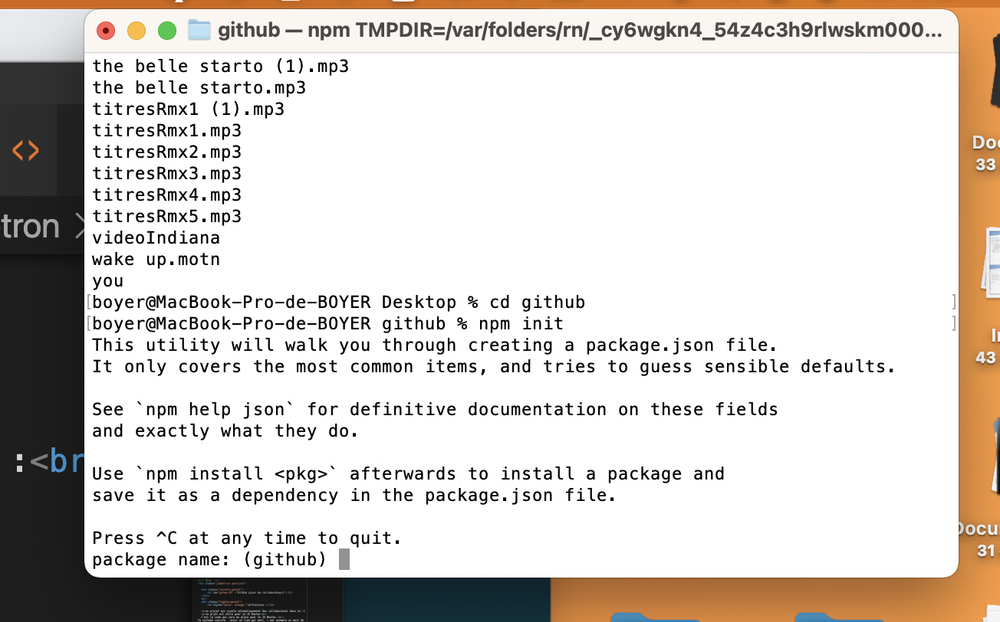
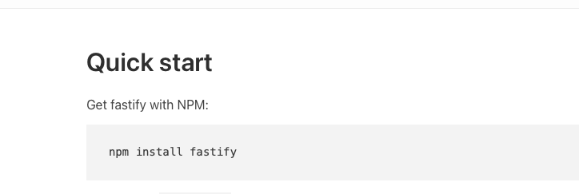

Dans le répertoire créer le fichier
mkdir mon_projet
cd mon_projet Créer un dosier
git init crée un nouveau dépôt ;
git statusVérifier
touch fichier.md pour créer un nouveau fichier
git add fichier.md add permet de rajouter un fichier à l'index
Créer un nouveau commits
git commit -m "ajouter le fichier"
En mode rapide
git init
touch un_fichier.md
git add un_fichier.md
git commit -am "ajouter fichier"
vim un_fichier.md modifier le fichier
Pour écrir dans vim (éditeur de texte)
git add un_fichier (fichier modifier)
git commit -m "nom du commit"
Ajout d'un autre commit
vim un_fichier pour rajouter des infos
git un add un_fichier.md enregister les modifs dans git
git commit -m"mon 2ème commit"
git log historique
raccourcie sans add
vim un_fichier.md si je dois modifier mon fichier
git commit -a -m "Dernière modif"
git commit -am"Teste modif"
Pour revenir en arrière
git checkout SHA
git checkout master Pour revenir au dernier commit créé
git log
cat new_file.md pour afficher son contenu
Plus de git
mkdir mon_projet
git clone clone un dépôt distant ;
git add ajoute de nouveaux objets blobs dans la base des objets pour chaque fichier modifié depuis le dernier commit.
Les objets précédents restent inchangés ;
git commit intègre la somme de contrôle SHA-1 d'un objet tree et les sommes de contrôle des objets commits
parents pour créer un nouvel objet commit ;
git branch liste les branches ;
git merge fusionne une branche dans une autre ;
git rebase déplace les commits de la branche courante devant les nouveaux commits d’une autre branche ;
git log affiche la liste des commits effectués sur une branche ;
git push publie les nouvelles révisions sur le remote. (La commande prend différents paramètres) ;
git pull récupère les dernières modifications distantes du projet (depuis le Remote) et les fusionne dans la branche courante ;
git stash stocke de côté un état non commité afin d’effectuer d’autres tâches.
Git est l'outil qui nous permet de créer un dépôt local et de gérer les versions de nos fichiers, alors que
GitHub est un service en ligne qui va héberger notre dépôt, qui sera du coup distant (puisqu'il ne sera pas sur notre machine).
Quels sont les outils existants ?
Il existe plusieurs outils intéressants (GitHub, GitLab, Bitbucket, SourceForge), et nous allons donc voir les principaux avantages et inconvénients de chacun.
est un outil de communication et de collaboration entre plusieurs développeurs
(ou tout autre personne qui écrit du texte). C’est une interface web créée pour faciliter l’interaction avec Git.
lien :
GitHub
il est la principale alternative à GitHub depuis le rachat de GitHub par Microsoft ! Les anti-Microsoft ont même lancé le hashtag #MovingToGitLab ! GitLab fonctionne avec une version gratuite à installer sur son propre serveur ou une version cloud payante.
lien :
GitLab
BitBucket est la version de Atlassian. Payante, elle plaira néanmoins aux habitués de la gestion de projet sous Atlassian. BitBucket conviendra aussi bien aux étudiants ou petites teams qu’aux grands groupes.
lien :
BitBucket
le petit dinosaure dans le domaine. SourceForge a été créé 10 ans avant les autres, afin de gérer à la base des projets open source. SourceForge intègre un outil de suivi des bugs et un répertoire de code intégré. Il n’est plus très populaire depuis ces dernières années.
lien :
SourceForge
un projet qui ajoute automatiquement des collaborateur dans un
repo privé GitHub
ce prjet est utile pour le JS Master
c'est le code qui sera en place pour le JS Master.
Ce systeme consite à avoir un lien par mail, ( par exemple un mail de bienvenu quand ils vont arrivé dans le club JS Master)
Un lien pour le discord, les actus de la semaine et aussi le lien pour lier leurs comptes éditeurs à un compte personnalisé
afin que derrière ça les inclus dans un repository privé dont le contenu est dédié aux membres du club.
API en deux routes pour le repository :
Accès à la page d'automatisation
- Création d'un App OAuth
- Redirection
- Email en callback
Callback de l'OAuth
- Création de l'access token
- Récupération de l'username
- Ajout en tant que collaborateur
je choisi un emplacement sur le bureau avec :
ls
cd Desktop
ls
cd (Mon dossier github fraichement créé)
ajouter npm init

remplir le 1 er champ ici (oauth-devtheory-github )
puis accepter le reste
Description :
Un serveur efficace implique un moindre coût de l'infrastructure, une meilleure réactivité sous charge et des utilisateurs satisfaits. Comment gérer efficacement les ressources de votre serveur, sachant que vous répondez au plus grand nombre de requêtes possible, sans sacrifier les validations de sécurité et le développement pratique?
Entrez Fastify. Fastify est un framework Web hautement axé sur la fourniture de la meilleure expérience de développeur avec le moins de frais généraux et une architecture de plugins puissante. Il est inspiré de Hapi et Express et, à notre connaissance, c'est l'un des frameworks Web les plus rapides de la ville.
ajouter son npm dans le Terminal

copier le code du site fastify
puis le placer dans le fichier index.js de vsCode
copier le code js du site fastify
puis le placer dans le fichier index.js de vsCode